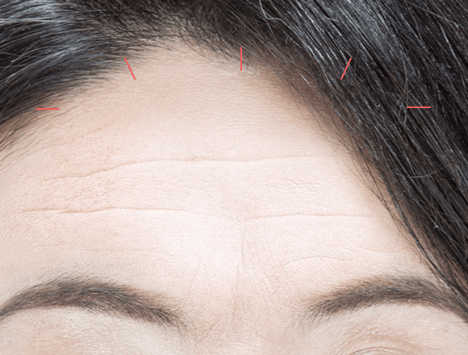

이마, 미간, 눈가주름을
한번에!
#이마
거상술
-

수술 시간
1시간
-

마취방법
수면/국소마취
-

실밥제거
4~5일후
-

내원치료
1~2회
-

회복기간
7일 이내
이마거상술이란?
노화가 진행되면서 얼굴의 윗부분에
나타나는 여러가지 노화증상인 이마주름,
미간주름, 눈가주름, 눈썹처짐 등은
이마 거상술을 통해 한번에 해결할 수
있습니다.연세자연미는 이마주름의 원인과
정도에 따라 환자의 나이와 성별을 고려해
적합한 방법으로 치료를 진행합니다.
수술은 가장 나중에
사용하는 방법입니다
이마주름이 약한 경우
보톡스 추천
주름의 원인이 되는 미간 근육에
보톡스를 주사하여 근육의 사용을 제한해
일정시간 약화시켜 주름을 덜 생기게 합니다.
이마주름의 자국이 생긴 경우
필러 추천
미간 주름의 자국이 생긴 경우 볼륨을
채워주는 필러를 이용해 주름을
개선할 수 있습니다. 보톡스와 함께
동시 사용하면 효과가 상승합니다.
이마거상술
수술방법
내시경 이마거상술
이마 정중앙과 양측에 약 1cm 크기의
절개창을 세로로 만들어 내시경을 이용해
당기는 방법으로 흉터를 최소화합니다.
-

1
이마 정중앙과 양측에 1cm의 작은
세로 절개를 만듭니다. -
2
내시경을 삽입하여 골막 아래 혹은
위쪽으로 박리를 진행합니다. -
3
이마를 아래로 당기는 근육을 절제한
후 이마를 뒤쪽으로 당겨 거상 후
고정합니다. -
4
매끈한 이마 라인을 완성합니다.
이마 거상술과
눈썹 거상술의 차이점
이마거상술과 눈썹거상술의 차이점을
이해하고 전문의와의 자세한 상담과 진단을
통해 환자분에게 적합한 방법으로 수술을
진행합니다.
이마 거상술
눈썹 거상술
-
상안면부의
연조직 전체를
광범위하게
당겨줌상안면부 전반적
주름(이마, 미간,
콧등, 눈가 주름)
개선눈썹과 눈커풀
처짐을 한번에
개선하고 싶은
경우
이마 거상술 추천 -
눈썹 위나 아래를
절개 후 봉합처진 눈꺼풀을
절제하고 근육을
절개하고 고정눈과 눈썹 사이의
거리가 멀고
미간과 눈꼬리
주름이 심하지
않은 경우
눈썹 거상술 추천
이마 거상술
핵심 포인트
주름의 확실한 개선을 위해
연세자연미는 자세한 상담과 진단을
통해가장 효과적인 방법으로 수술을
진행합니다.


근본적인 원인 해결
이은정 대표 원장님은 25년 노하우로
만족도 높은 결과를 제공합니다.

복합 시술
한 가지 시술만 고집하지 않고 환자의
주름 정도에 따라 복합적인 시술을
진행합니다.

테크닉
오랜 경험과 숙련된 기술력 으로
결과에 대한 높은 만족 도를 드립니다.
사후 관리 시스템

연세 자연미
SELF CARE 파우치 제공
통증과 붓기를 줄여주고 일상생활로의 빠른
복귀를 위해 수술 후 체계적이고 다양한
사후관리 시스템을 진행하고
있습니다.
함께하면좋은 시술
연세자연미성형외과는 개인의 상태에
따른 노화 증상과 원인에 맞는
여러가지
시술들을 복합적으로 진행하는 맞춤형
안티에이징 수술법
으로 자연스럽게
젊어지는 아름다움을 선물해드립니다.


연세자연미만의
Anti-Aging
솔루션
티에이징 성형은 미용을 위한
일반적인 젊은 층의
성형과는 접근을
달리해야 합니다.
연세자연미는 노화로 인해 환자가
고민하는 부위를 확실히 개선함과
동시에 수술과 회복에 대한 부담을
줄일 수 있는 안티에이징 성형을
추구합니다.
-
01
화려한 변화보다는 자연스러움이
중요합니다. -
02
수술에 대한 부담이 적어야 합니다.
-
03
기능적인 부분까지 개선되어야
합니다.